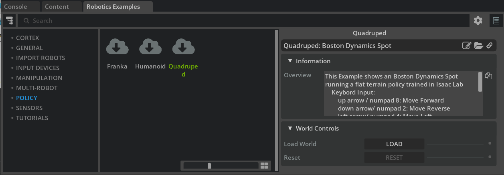

Isaac Sim でのポリシーのデプロイ¶
学習目標¶
このチュートリアルを修了すると、以下の内容を習得できます：
- H1（ヒューマノイド）／ Spot（四足） の平地歩行ポリシーのデモの動かし方
- Isaac Lab でのポリシーのトレーニングとエクスポートの流れ
- Isaac Lab が生成する環境パラメータファイル（
env.yaml/agent.yaml）の読み方 - ポリシーでロボットを駆動する Policy Controller クラスの構造
- 位置出力→トルク制御への変換（アクチュエータネットワーク）
- ポリシーが動かないときのデバッグ手順
- Sim-to-Real デプロイへの入り口
はじめに¶
前提条件¶
- Isaac Sim の基本操作と Python スクリプティング（Core API チュートリアル）に慣れていること
- アーティキュレーションとジョイントドライブの基礎（ロボットセットアップ チュートリアル 13: 脚ロボットのリギング）を理解していると、本チュートリアルの内容がスムーズに理解できます
- デモの実行（ステップ 1）と定義ファイルの読解は Isaac Sim 単体で完結します。ステップ 2 のトレーニング／エクスポートを自分で実行する場合のみ、Isaac Lab セットアップを完了してください
所要時間¶
約 20〜30 分
概要¶
このチュートリアルでは、Isaac Lab で学習（トレーニング）したポリシーを Isaac Sim にデプロイして動かすプロセスを、サンプルとロボット定義ファイルを追いながら解説します。
学習済みポリシーを Isaac Sim で動かしたい場面は数多くあります。たとえば：
- 複雑な移動（ロコモーション）をロボットに実行させたい
- ナビゲーションや自己位置推定など他のスタックとポリシーを組み合わせてシミュレーション上でテストしたい
- ROS 2 ブリッジなど既存のインターフェース経由でポリシーを使いたい
Isaac Lab と Isaac Sim の役割分担
Isaac Lab は Isaac Sim を基盤とするロボット学習フレームワークで、強化学習・模倣学習のための API とサンプル環境を提供します。ここで言うポリシー（policy）とは、観測（関節角度・速度・指令など）を入力として行動（各関節の目標位置など）を出力する、学習済みのニューラルネットワーク（制御方策）のことです。典型的なワークフローは次のとおりです：
- Isaac Lab で数千並列の環境を使ってポリシーを学習する
- 学習済みポリシーを TorchScript（
.ptファイル）としてエクスポートする - Isaac Sim 側でポリシーを読み込み、1 台のロボットを対象に推論（inference）して駆動する ← 本チュートリアルの範囲
このとき重要になるのが、「学習時の環境設定（ジョイント順序・ゲイン・観測のスケールなど）を推論側でも正確に再現する」ことです。ここが食い違うとロボットはまともに歩けません。本チュートリアルのデバッグ節はほぼこの食い違いの発見方法の解説です。
ステップ 1：デモを動かしてみる¶
まずは完成形を体験します。Window > Examples > Robotics Examples を有効にして、画面下部の Robotics Examples タブを開いてください。
1-1. Unitree H1 ヒューマノイドの例¶
- 空のステージを作成します（File > New From Stage Template > Empty）。
- Robotics Examples > POLICY > Humanoid を開きます。

- LOAD を押してシーンを読み込みます。
この例では、Isaac Lab で学習された H1 Flat Terrain Policy（平地歩行ポリシー）がヒューマノイドのロコモーションを制御します。

キーボードで操作できます：
| 操作 | キー |
|---|---|
| 前進 | ↑ / NUM 8 |
| 左旋回 | ← / NUM 4 |
| 右旋回 | → / NUM 6 |
1-2. Boston Dynamics Spot 四足ロボットの例¶
- 空のステージを作成します。
- Robotics Examples > POLICY > Quadruped を開きます。

- LOAD を押してシーンを読み込みます。
この例では Spot Flat Terrain Policy が四足ロボットのロコモーションを制御します。

| 操作 | キー |
|---|---|
| 前進 | ↑ / NUM 8 |
| 後退 | ↓ / NUM 2 |
| 左移動 | ← / NUM 4 |
| 右移動 | → / NUM 6 |
| 左旋回 | N / NUM 7 |
| 右旋回 | M / NUM 9 |
スタンドアロン版のサンプルとポリシーファイル
UI を使わないスタンドアロンのワークフローや、これらの例で使われているポリシーファイル自体については、公式の isaacsim.robot.policy.examples エクステンションのドキュメントを参照してください。
ステップ 2：Isaac Lab でのトレーニングとエクスポート¶
2-1. トレーニング¶
ポリシーのデプロイの第一歩は、Isaac Lab でポリシーを学習することです。既存タスク・カスタムタスクの学習方法は Isaac Lab のチュートリアルを参照してください。
上のデモで使われているポリシーのタスク名は次のとおりです：
- Unitree H1：
Isaac-Velocity-Flat-H1-v0 - Boston Dynamics Spot：
Isaac-Velocity-Flat-Spot-v0
たとえば Isaac Lab 2.0 で H1 の平地歩行ポリシーを学習するコマンドは：
./isaaclab.sh -p scripts/reinforcement_learning/rsl_rl/train.py --task Isaac-Velocity-Flat-H1-v0 --headless
2-2. エクスポート¶
RSL-RL で学習したポリシーは、Isaac Lab ワークスペース内の scripts/reinforcement_learning/rsl_rl/play.py を実行するとエクスポートできます。
./isaaclab.sh -p scripts/reinforcement_learning/rsl_rl/play.py --task Isaac-Velocity-Flat-H1-v0 --num_envs 32
エクスポート先と生成タイミング
エクスポートは play.py の起動直後（チェックポイント読み込みの直後）に一度だけ実行されます。その後に始まるロボットの歩行はポリシーの再生（プレイバック）で、エクスポートとは関係ありません。ウィンドウが開いた時点でエクスポートは完了しているので、そのまま閉じて構いません。
生成先は play.py のあるフォルダではなく、読み込んだチェックポイントと同じ場所（IsaacLab リポジトリ直下の logs フォルダ内）です。H1 平地歩行タスクの場合：
他のフレームワークで学習したポリシー
別の強化学習フレームワークで学習したポリシーや学習途中のスナップショットでも推論は可能ですが、ニューラルネットワークの構造情報など追加のデータが必要になる場合があります。使用しているフレームワークのドキュメントに従ってください。
また、デモで使われている学習済みポリシーファイルは公式ドキュメントの Policy Example エクステンションのページからダウンロードできます。
ステップ 3：環境パラメータファイルを読む¶
トレーニングを実行すると、学習済みポリシーと一緒に 2 つの YAML ファイルが logs/rsl_rl/<experiment 名>/<日時>/params/ フォルダ（H1 平地歩行なら logs/rsl_rl/h1_flat/<日時>/params/）に生成されます：
agent.yaml— ニューラルネットワークのパラメータを記述env.yaml— 環境とロボットの構成を記述。デプロイ時に Isaac Sim 側の設定を合わせる際の「正解データ」になる最重要ファイル
以下、Isaac-Velocity-Flat-H1-v0 の env.yaml から抜粋して各セクションを見ていきます。
env.yaml の内容は Isaac Lab のバージョンで変わる
以下の抜粋は、本チュートリアル執筆時点の Isaac Lab（main ブランチ、Isaac Sim 5.1.0 対応）で生成した env.yaml に基づきます。公式チュートリアルには旧バージョンの抜粋が載っており、omni.isaac.lab.* 名前空間（Isaac Lab 2.0 で isaaclab.* に改名）や、現在は削除された disable_contact_processing / use_gpu_pipeline キーが登場します。手元で生成されたファイルとキーの有無・順序が多少違っても、確認すべきポイント（dt・重力・ゲイン・スケールなど）は同じです。
3-1. シミュレーション設定（sim）¶
sim:
physics_prim_path: /physicsScene
device: cuda:0
dt: 0.005
render_interval: 4
gravity: !!python/tuple
- 0.0
- 0.0
- -9.81
enable_scene_query_support: false
use_fabric: true
この後に physx:（ソルバー設定）、physics_material:（地面の摩擦係数など）、render: のサブセクションが続きます。
このポリシーは物理シミュレーションが dt = 0.005 秒（200 Hz）、重力が下向きに 9.81 m/s² で動くことを前提に学習されています。デプロイ先の Physics Scene もこれに合わせる必要があります。
3-2. ロボットの初期状態（scene: robot: init_state）¶
ロボットの初期位置・姿勢・速度と、各ジョイントのデフォルト位置・速度を記述します：
init_state:
pos: !!python/tuple
- 0.0
- 0.0
- 1.05
rot: !!python/tuple
- 1.0
- 0.0
- 0.0
- 0.0
lin_vel: !!python/tuple
- 0.0
- 0.0
- 0.0
ang_vel: !!python/tuple
- 0.0
- 0.0
- 0.0
joint_pos:
.*_hip_yaw: 0.0
.*_hip_roll: 0.0
.*_hip_pitch: -0.28
.*_knee: 0.79
.*_ankle: -0.52
torso: 0.0
.*_shoulder_pitch: 0.28
.*_shoulder_roll: 0.0
.*_shoulder_yaw: 0.0
.*_elbow: 0.52
joint_vel:
.*: 0.0
.*_hip_yaw のような表記
ジョイント名は正規表現で指定されています。.*_knee は left_knee、right_knee の両方にマッチします。デフォルトジョイント位置はポリシーの観測・行動の基準値（オフセット）として使われるため、デプロイ側で 1 つでも間違えると歩容が崩れます（後述のデバッグ節参照）。
3-3. アクチュエータ（actuators）¶
各ジョイントの物理特性（トルク上限・速度上限・Stiffness・Damping）を記述します：
actuators:
legs:
class_type: isaaclab.actuators.actuator_pd:ImplicitActuator
joint_names_expr:
- .*_hip_yaw
- .*_hip_roll
- .*_hip_pitch
- .*_knee
- torso
effort_limit: null
velocity_limit: null
effort_limit_sim: 300
velocity_limit_sim: null
stiffness:
.*_hip_yaw: 150.0
.*_hip_roll: 150.0
.*_hip_pitch: 200.0
.*_knee: 200.0
torso: 200.0
damping:
.*_hip_yaw: 5.0
.*_hip_roll: 5.0
.*_hip_pitch: 5.0
.*_knee: 5.0
torso: 5.0
デプロイ側のロボットのジョイントドライブ（Stiffness / Damping）はこの値に合わせます。
effort_limit_sim などの _sim 付きキー
現在の Isaac Lab では、シミュレーションに適用されるトルク上限・速度上限は effort_limit_sim / velocity_limit_sim キーで表されます（旧バージョンの抜粋にある effort_limit: 300 に相当）。null のキーはロボット定義のデフォルト値がそのまま使われることを意味します。
3-4. 観測（observations）¶
ポリシーへの入力（観測）の構成と、観測に適用するスケール・クリップ・ノイズを記述します：
observations:
policy:
concatenate_terms: true
concatenate_dim: -1
enable_corruption: true
history_length: null
flatten_history_dim: true
base_lin_vel:
func: isaaclab.envs.mdp.observations:base_lin_vel
params: {}
modifiers: null
noise:
func: isaaclab.utils.noise.noise_model:uniform_noise
operation: add
n_min: -0.1
n_max: 0.1
clip: null
scale: null
history_length: 0
flatten_history_dim: true
base_lin_vel の後には base_ang_vel、projected_gravity、velocity_commands、joint_pos、joint_vel、actions の各観測項目が同じ形式で続きます。この並び順が、ステップ 4 で組み立てる観測テンソルの並び順に対応します。
3-5. 行動（actions）¶
ポリシーの出力（行動）の種類と、出力に適用するスケール・オフセットを記述します：
actions:
joint_pos:
class_type: isaaclab.envs.mdp.actions.joint_actions:JointPositionAction
asset_name: robot
debug_vis: false
clip: null
joint_names:
- .*
scale: 0.5
offset: 0.0
preserve_order: false
use_default_offset: true
この例では、ポリシー出力に scale 0.5 を掛け、デフォルトジョイント位置をオフセットとして加えたものが目標ジョイント位置になります。
3-6. コマンド（commands）¶
ポリシーに与える指令（この例では基準速度）の種類と許容範囲を記述します：
commands:
base_velocity:
class_type: isaaclab.envs.mdp.commands.velocity_command:UniformVelocityCommand
resampling_time_range: !!python/tuple
- 10.0
- 10.0
debug_vis: true
asset_name: robot
heading_command: true
heading_control_stiffness: 0.5
rel_standing_envs: 0.02
rel_heading_envs: 1.0
ranges:
lin_vel_x: !!python/tuple
- 0.0
- 1.0
lin_vel_y: !!python/tuple
- 0.0
- 0.0
ang_vel_z: !!python/tuple
- -1.0
- 1.0
heading: !!python/tuple
- -3.141592653589793
- 3.141592653589793
前進速度は 0〜1 m/s、旋回速度は -1〜1 rad/s の範囲で学習されている（横方向速度 lin_vel_y は 0 に固定）ため、デプロイ時にこの範囲を超えた指令を与えても正しく動く保証はありません。
ステップ 4：Policy Controller クラスの構造¶
デモのロボットは、ロボット定義クラス（Policy Controller）によって制御されています。このクラスの役割は、ロボットのプリムを定義し、ポリシーを読み込み、ロボットの設定をポリシーに合わせ、観測テンソルを組み立て、ポリシーの出力をロボットに適用することです。主要メソッドを順に見ていきます。
| メソッド | 役割 |
|---|---|
| コンストラクタ | ロボットの USD をスポーンし、制御用の Articulation オブジェクトを作成する |
load_policy |
ポリシーファイルと対応する環境ファイル（env.yaml）を読み込む |
initialize |
シミュレーション開始後に一度だけ呼ぶ。制御モード（エフォート＝トルク指令で駆動するか、位置指令で駆動するか）、ジョイントゲイン、最大トルク・最大速度、アーティキュレーションルートをポリシーに合わせて設定する |
_set_articulation_prop |
アーティキュレーションルートのプロパティを解析してロボットに設定する |
_compute_observation |
観測テンソルを組み立てる（継承クラスでオーバーライド必須） |
_compute_action |
観測からポリシーの推論を実行して行動を得る |
forward |
毎物理ステップ呼ばれ、制御アクションを生成・適用する（継承クラスでオーバーライド必須） |
4-1. 観測テンソルの組み立て（_compute_observation）¶
ポリシーが期待する形式どおりに観測テンソルを作ります。以下は H1 平地歩行ポリシーの例です（観測次元 69）：
obs = np.zeros(69)
# ベースの並進速度
obs[:3] = self._base_vel_lin_scale * lin_vel_b
# ベースの角速度
obs[3:6] = self._base_vel_ang_scale * ang_vel_b
# 重力ベクトル（ボディ座標系）
obs[6:9] = gravity_b
# 指令（前進速度・横速度・旋回速度）
obs[9] = self._base_vel_lin_scale * command[0]
obs[10] = self._base_vel_lin_scale * command[1]
obs[11] = self._base_vel_ang_scale * command[2]
# ジョイント状態（デフォルト位置からの差分と速度）
current_joint_pos = self.get_joint_positions()
current_joint_vel = self.get_joint_velocities()
obs[12:31] = current_joint_pos - self._default_joint_pos
obs[31:50] = current_joint_vel
# 前回の行動
obs[50:69] = self._previous_action
観測スケールを忘れずに
各観測項目には、env.yaml で指定された観測スケールを掛けるのを忘れないでください。
4-2. 制御アクションの生成（forward）¶
毎物理ステップ呼ばれ、ポリシーの出力からロボットへの指令を作ります：
if self._policy_counter % self._decimation == 0:
obs = self._compute_observation(command)
self.action = self._compute_action(obs)
self._previous_action = self.action.copy()
action = ArticulationAction(joint_positions=self.default_pos + (self.action * self._action_scale))
self.robot.apply_action(action)
self._policy_counter += 1
decimation（間引き）とアクションスケール
- ポリシーの推論は毎ステップ実行する必要はありません。
env.yamlの decimation パラメータに従って間引きます（例：物理 200 Hz、推論 50 Hz なら decimation = 4）。 - ポリシー出力には
env.yamlで指定されたアクションスケールを掛けるのを忘れないでください。
set_joint_position() を使わないこと
位置ベースの制御では set_joint_position() を使ってはいけません。これはジョイントを目標位置へ瞬間移動（テレポート）させる関数であり、物理的な駆動にはなりません。必ず apply_action()（ジョイントドライブ経由の駆動）を使ってください。
ステップ 5：位置出力からトルク制御への変換¶
ロボットによっては、制御入力としてトルクが必要な場合があります。ポリシーの出力が位置の場合は、位置→トルクの変換が必要です。方法はいろいろありますが、ここではアクチュエータネットワーク（実機アクチュエータの応答を模したニューラルネットワーク）を使う例を示します。
アクチュエータネットワーククラスは source/extensions/isaacsim.robot.policy.examples/isaacsim/robot/policy/examples/utils/actuator_network.py に定義されています。ANYmal ロボット用のアクチュエータネットワークのファイルは、Content ブラウザの SAMPLES > POLICY > ANYMAL_POLICIES にあります。
5-1. アクチュエータネットワークの読み込み¶
ANYmal Flat Terrain Policy クラスの initialize では、LSTM ベースの SEA（Series Elastic Actuator：直列弾性アクチュエータ）ネットワーク（LstmSeaNetwork）にポリシーファイルを読み込ませています：
def initialize(self, physics_sim_view=None) -> None:
"""
アーティキュレーションを初期化し、ドライブモードを設定する
"""
super().initialize(physics_sim_view=physics_sim_view, control_mode="effort")
# アクチュエータネットワーク
assets_root_path = get_assets_root_path()
file_content = omni.client.read_file(
assets_root_path + "/Isaac/Samples/Policies/Anymal_Policies/sea_net_jit2.pt"
)[2]
file = io.BytesIO(memoryview(file_content).tobytes())
self._actuator_network = LstmSeaNetwork()
self._actuator_network.setup(file, self.default_pos)
self._actuator_network.reset()
5-2. アクチュエータネットワークの実行¶
advance（毎ステップの処理）では、ロコモーションポリシーが出力した位置をアクチュエータネットワークに入力し、得られたトルクをロボットに適用します：
current_joint_pos = self.get_joint_positions()
current_joint_vel = self.get_joint_velocities()
joint_torques, _ = self._actuator_network.compute_torques(
current_joint_pos, current_joint_vel, self._action_scale * self.action
)
self.set_joint_efforts(joint_torques)
ステップ 6：デバッグのヒント¶
ロボットが一発で動くことはまれです。動かないときは次の順に確認していきます。
6-1. ポリシー自体を検証する¶
まず、ポリシーが Isaac Lab 上で正しく動くことを、Isaac Lab でのプレイ（学習済みエージェントの再生）で確認します。ワークフローに対応した play.py と正しいタスク名を使ってください。
6-2. ジョイント順序を検証する¶
Isaac Lab で動くなら、次に疑うのはジョイントの順序です。ポリシーの観測・行動はジョイントの並び順に依存するため、Isaac Sim 側のアセットと Isaac Lab で学習に使ったアセットでジョイント名と順序が完全に一致している必要があります。
ジョイント順序は次のスニペットで確認できます：
# 対象の USD を開き、シミュレーションを PLAY してから実行すること
prim = Articulation(prim_path=<your_robot_prim_path>)
prim.initialize()
print(str(prim.dof_names))
Isaac Sim 側と Isaac Lab 側の両方で dof_names を出力し、名前と順序が一致するか比較してください。
下の例では、ANYmal への制御指令の順序が間違っているため、ロボットが転倒しています：

6-3. デフォルトジョイント位置を検証する¶
ジョイント順序が合っていたら、デフォルトジョイント位置が正しく設定されているか確認します。ここが間違っていると、ジョイントが正しい位置に行きません。
下の例では、足首ジョイントの設定が間違っており、H1 がつま先立ちで「ムーンウォーク」しています：

6-4. ジョイントプロパティを検証する¶
ジョイントの動きが大きすぎる・小さすぎる場合は、ジョイントプロパティ（Stiffness / Damping / トルク上限など）の設定を疑います：
# 対象の USD を開き、シミュレーションを PLAY してから実行すること
prim = Articulation(prim_path=<your_robot_prim_path>)
prim.initialize()
print(str(prim.dof_properties))
出力を env.yaml の actuators セクションと比較してください。
Stiffness / Damping が高すぎると動きが硬く抑え込まれ（過制動気味になり、ポリシーの指令どおりに関節が動かない状態）：

低すぎると動きすぎ（腕の震えなど）が発生します：

6-5. シミュレーション環境を検証する¶
ロボット側が完全に一致していてもまだ動かない場合は、シミュレーションパラメータを確認します。
Physics Scene のタイムステップ：Physics Scene の Time Steps Per Second (Hz) は、env.yaml の dt の逆数に設定します（dt = 0.005 → 200 Hz）。env.yaml の physx セクションの内容も Physics Scene のプロパティと一致させてください。
下の例では、コントローラが 500 Hz を想定しているのにタイムステップが 60 Hz に設定されているため、正しく歩けていません：

6-6. 観測・行動テンソルを検証する¶
最後に、観測・行動テンソルを確認します：
- テンソルの構造（次元・並び）が正しいか
- テンソルに入れているデータそのものが正しいか
- 入力・出力に正しいスケール係数が適用されているか
- ポリシーの出力がアーティキュレーションの期待する入力形式・順序になっているか
Sim-to-Real デプロイ¶
ここまでで、ロボットとポリシーが Isaac Sim 上で正しく動き、スタック全体と組み合わせたテストもできるようになりました。次はいよいよ実機へのデプロイです。実例として、Spot への強化学習ポリシーのデプロイを扱った NVIDIA のブログ記事 Closing the Sim-to-Real Gap: Training Spot Quadruped Locomotion with NVIDIA Isaac Lab を参照してください。
また、ROS 2 経由でポリシーを動かす方法は ROS 2 チュートリアル 16: 強化学習ポリシーの ROS 2 実行で扱っています。
まとめ¶
このチュートリアルでは以下のトピックを扱いました：
- H1 / Spot の歩行ポリシーデモの実行
- Isaac Lab でのトレーニングとエクスポートのコマンド
env.yamlの各セクション（sim / init_state / actuators / observations / actions / commands）の読み方- Policy Controller クラスの構造（観測の組み立てと行動の適用）
- 位置→トルク変換（アクチュエータネットワーク）
- ジョイント順序・デフォルト位置・ゲイン・タイムステップというデバッグの定石
次のステップ¶
- チュートリアル 2: Cloner 入門 - 強化学習に不可欠な、環境を並列に複製する Cloner インターフェースを学びます。